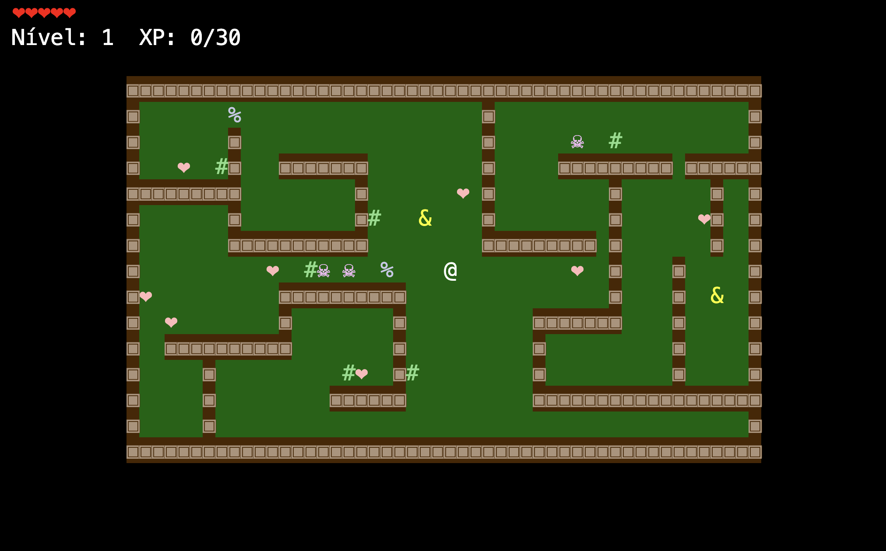

Sobre mim
Sempre tive curiosidade sobre como sites, jogos e programas funcionam. No Insper, estou transformando essa curiosidade em prática e entendendo o que acontece por trás das telas.
Minha trajetória começou no futebol. Uma contusão me levou a encontrar na tecnologia um novo caminho. A disciplina, a persistência e o trabalho em equipe que aprendi no esporte continuam comigo nessa etapa.
Estou explorando diferentes áreas da computação. Gosto de aprender fazendo, enfrentar desafios e melhorar a cada experiência.
LINHA DO TEMPO
2023 — 2025 · Escola Concept
Ensino médio.
2026 · Insper
Começando minha graduação!
Meus projetos
-

Concluído
Dev Life: Monstros do Terminal
Meu primeiro projeto da faculdade: um jogo em Python no terminal, com exploração de labirinto e batalhas por turnos contra monstros.
Ver código no GitHub -
Planejado
Jogo com Pygame
Projeto planejado: um jogo em Python com a biblioteca Pygame.
CONTATO
Tem um projeto em mente? Vamos construir juntos.
Estou aberto a oportunidades de estágio e colaborações. Respondo rápido!